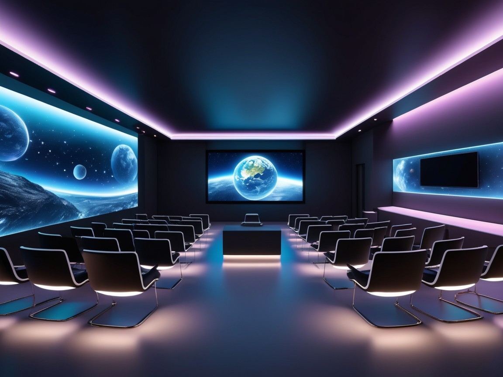

Diseño de la interfaz:
Para el diseño de la interfaz, se ha usado una plantilla HTML gratuita de este enlace,
ya que tiene una amplia variedad de plantillas gratuitas y responsibles multiplataformas.
Al contrario de Canva que, es más para powerpoints, diseño de CVs y carteles digitales.
Incluso también para plantillas html, pero con menos variedad de las que son gratis, ya que hay muchas de pago. Y luego, Canva está más orientado a Wordpress
y edición de página web por interfaz, en vez de por código, como el del primer enlace.
Diseño del logo:
El logo se ha generado con Deep Dream Generator, a partir de un prompt,
o instrucción de entrada.
Instrucción:
Quiero un logotipo para mi negocio de e-learning, llamado Hack a Learning y,
necesito un logotipo ambicioso y rompedor, con proyección de futuro.
Resultado generado:
Diseño de la foto de portada:
La imagen del inicio de la interfaz ha sido seleccionada a través de: FreePik,
donde el mensaje de entrada que da lugar a la imagen generada es el siguiente: Clase de instituto en 3D y futurista.
Resultado generado:

Además, se ha generado por Deep Dream Generator una clase futurista al estilo de FreePik, pero introduciendo como entrada
la siguiente instrucción:
Un aula futurista y moderna en 3D, llena de tecnología avanzada e iluminada con luces brillantes y ambientales.
La sala tiene un diseño minimalista y elegante, con pantallas holográficas, displays digitales flotantes y un
espacio central en forma de círculo para el aprendizaje. Iluminación de neón acentúa las paredes y el suelo,
creando una atmósfera inmersiva y de alta tecnología. Las sillas y escritorios están equipados con paneles táctiles
interactivos, mientras que las paredes muestran datos educativos en grandes pantallas transparentes. No hay personas
presentes, destacando el enfoque en el diseño futurista y la tecnología.
Resultado generado:

Edición de las imágenes:
La edición de las imágenes para ajustarlas a la interfaz y que el resultado sea óptimo, se ha hecho a través del software: Adobe Photoshop